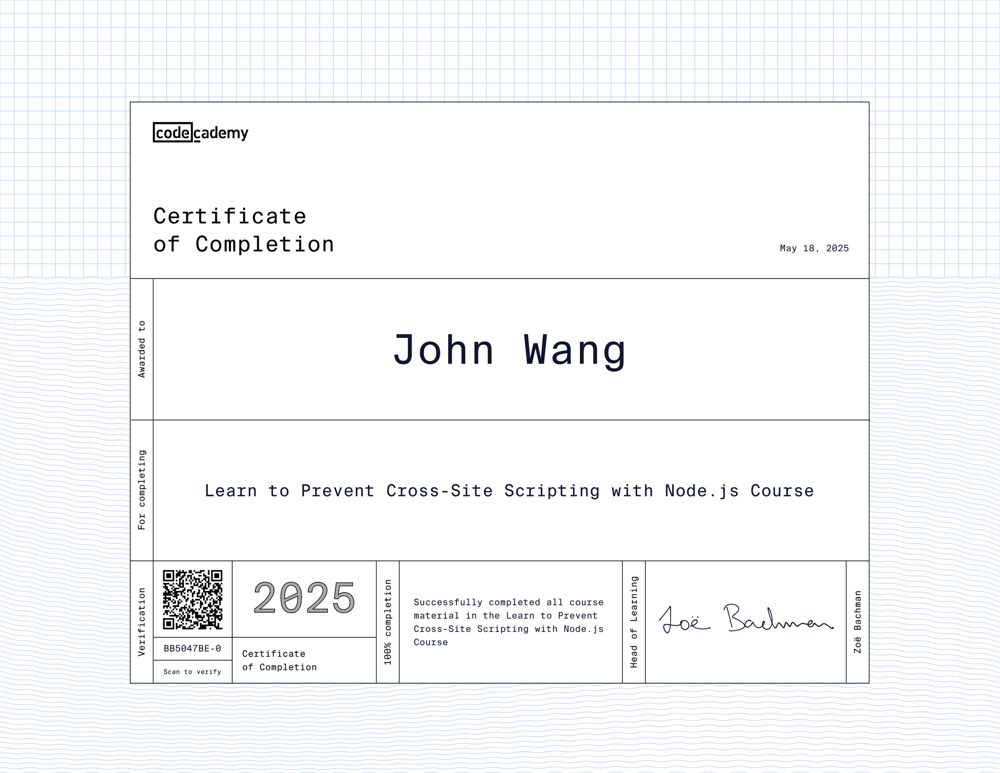
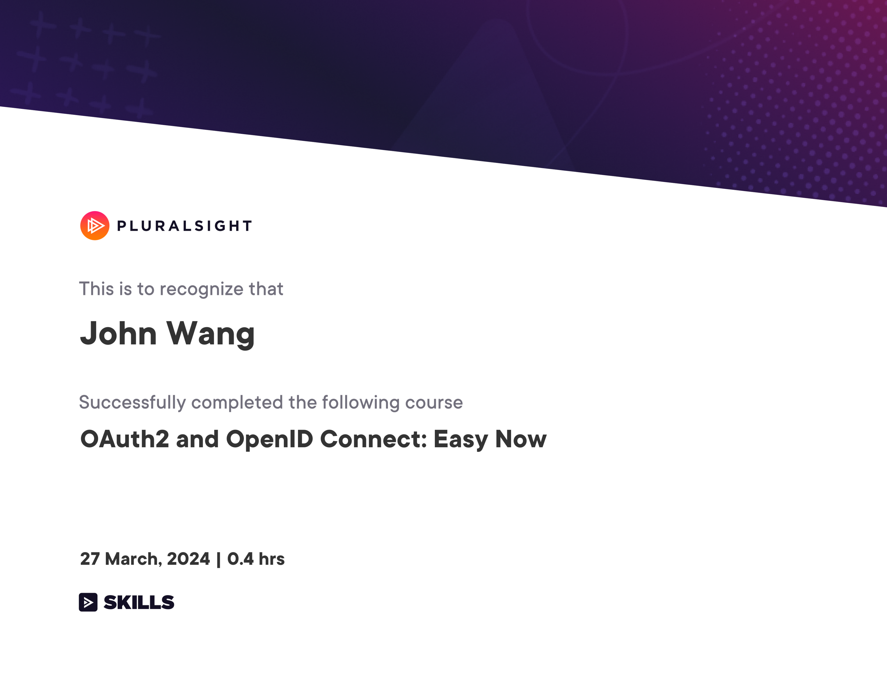
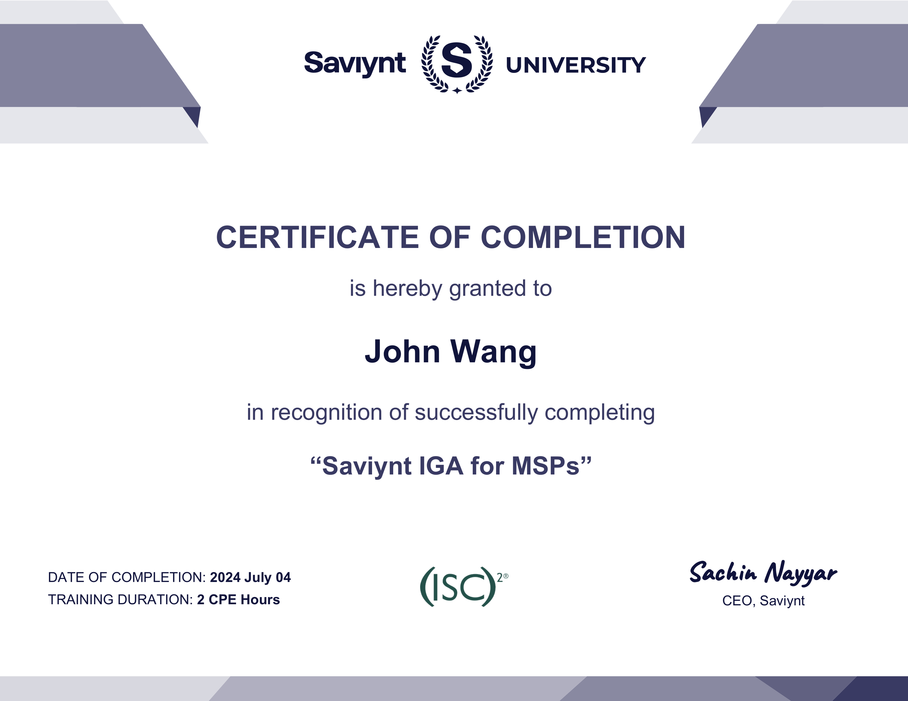

John's Security: IDSec Certificates
- Programming
- Introduction to OAuth 2.0 and OpenID Connect from Pragmatic Web Security by Dr. Philippe De Ryck
- API Security Architect from API Academy
- OWASP Top 10: Broken Access Control from Codecademy
- OWASP Top 10: Identification and Authentication Failures from Codecademy
- Learn to Prevent Cross-Site Scripting (XSS) with Node.js from Codecademy
- Learn about CSRF Attacks from Codecademy
- OAuth2 and OpenID Connect: Easy Now from Pluralsight by Roland Guijt
- Third-Party
- AWS
- Azure
- Saviynt
Programming (7)
Introduction to OAuth 2.0 and OpenID Connect from Pragmatic Web Security by Dr. Philippe De Ryck

API Security Architect from API Academy

OWASP Top 10: Broken Access Control from Codecademy

OWASP Top 10: Identification and Authentication Failures from Codecademy

Learn to Prevent Cross-Site Scripting (XSS) with Node.js from Codecademy

Learn about CSRF Attacks from Codecademy

OAuth2 and OpenID Connect: Easy Now from Pluralsight by Roland Guijt

Third-Party (2)
Working With Third Parties Securely from KnowBe4

Minimising Third-Party Risk from KnowBe4
AWS (3)
Introduction to AWS Identity and Access Management (IAM) from Simplilearn

Getting Started with AWS Control Tower from Simplilearn

AWS: Identity and Access Management from Whizlabs
Azure (1)
Microsoft Azure Identity and Security for Administrators: The Big Picture from Pluralsight by Jean Francois Landry

Saviynt (6)
Saviynt IGA L100 Self-Paced Training from Saviynt
Saviynt IGA for MSPs from Saviynt

Application Onboarding (AOB) Fundamentals from Saviynt
Saviynt CPAM L100 - Self-Paced Training from Saviynt
Application Access Governance (AAG) Fundamentals from Saviynt